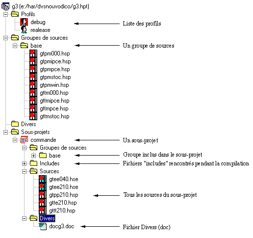

Tout le projet est présenté sous la forme d'un arbre.
L'expansion ou la réduction d'un élément se fait soit
par un double clic sur l'élément,
par un double clic sur les symboles ou
F1 permet d'appeler l'aide.
Le chargement d'un source dans l'éditeur se fait par un double clic sur son nom.

Remarques
Le dossier Includes des sous-projets est automatiquement garni par la construction du sous-projet. Il contient la liste de tous les includes du sous-projet. Un double-clic sur le nom d'un source permet de le charger dans l'éditeur.
Lors du double-clic (raccourci clavier Entrée) sur un nom de source le fichier est chargé dans l'éditeur.
Si le fichier n'appartient pas au sous-projet courant, Xwin change automatiquement de sous-projet courant. Pour ne pas changer automatiquement de sous-projet courant, enfoncez la touche Ctrl. Lors du changement de sous-projet les fichiers du sous-projet courant restent ouverts sauf si l'option Fermer les fichiers au changement de sous-projet du profil courant est sélectionnée. Voir Paramètres des profils .